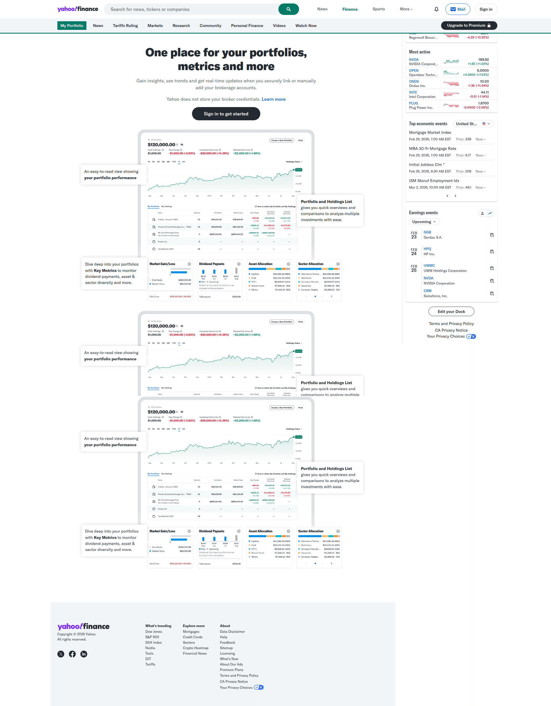
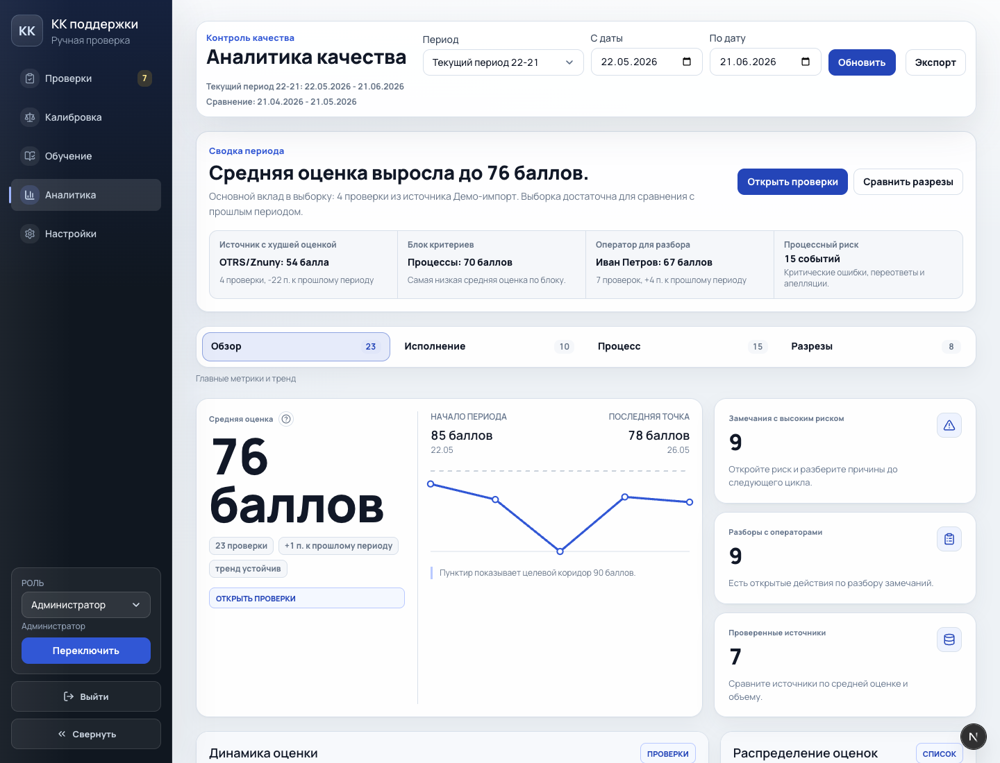
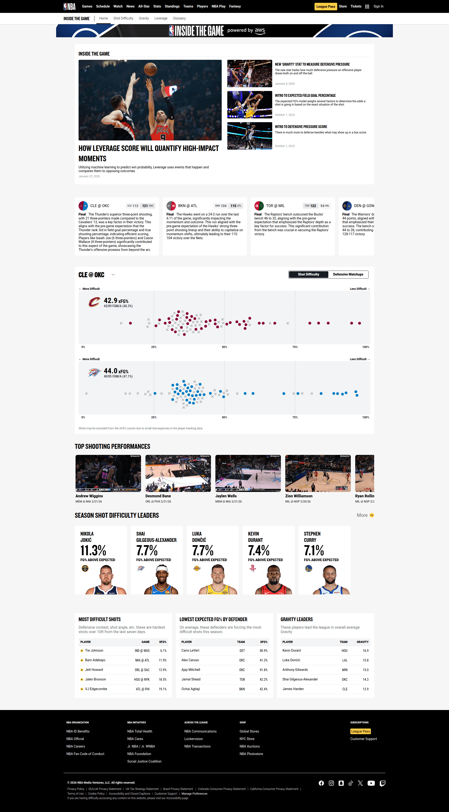

From Finance: Yahoo Finance portfolio

Средняя оценка 76 Качество улучшилось +4 п. к прошлому периоду
Лучший переносимый паттерн: взять из finance/sports не больше графиков, а "performance readout": явный gain/loss, моментум, лидерборд падений и подписи к точкам.

| Idea | Novelty | Feasibility | Verdict |
|---|---|---|---|
| Finance-style gain/loss verdict | Medium | High | Prototype |
| Sports momentum signals | High | High | Prototype |
| Leaderboard of declines | Medium | High | Prototype |
| Full animated timeline replay | High | Low | Skip for now |


Средняя оценка 76 Качество улучшилось +4 п. к прошлому периоду

Сигналы тренда Последняя точка Минимум периода Самое сильное движение

Позже можно добавить "режим расследования" для тренда: клик по точке открывает проверки этого дня и подсвечивает вклад в провал. Сейчас достаточно tooltip и ссылки на очередь.